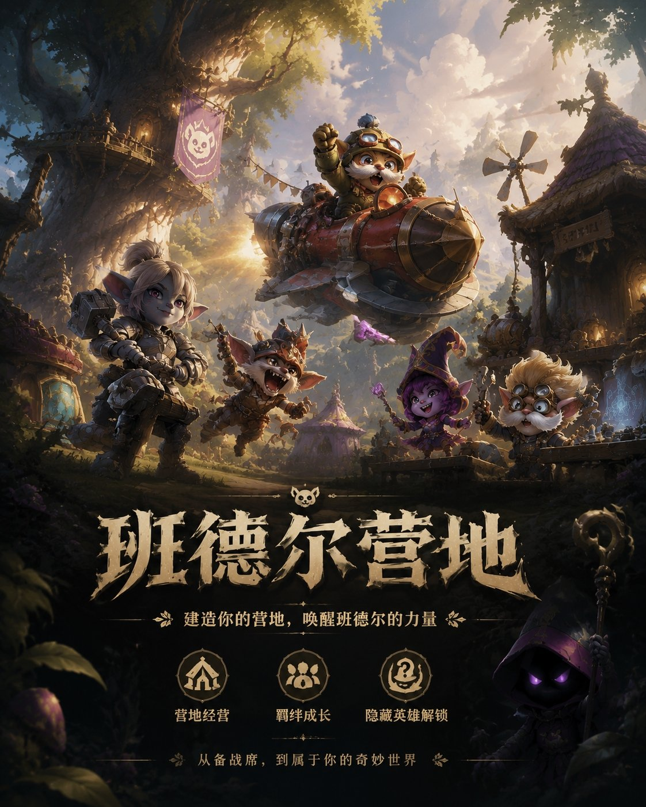

项目概述
基于备战席资源利用不足与自走棋长期新鲜感衰减问题，设计"营地经营/ 班德尔营地"玩法方案，将备战席棋子从单纯寄存空间转化为可投入、可取舍的经营资源，构建"棋盘战力 + 营地发展"并行的双线程运营结构。
完成原创机制型羁绊"班德尔营地"的完整设定，包括3/4/5 羁绊层级、营地契约绑定路线、双高级营地、隐藏 6 费英雄"邪恶小法师"解锁机制，并补充数值失衡、信息过载、最优解固定、系统喧宾夺主等风险分析与应对方案。

核心内容
一、构筑体系深度拆解
- 自走棋品类定义与核心循环解析
- 羁绊分层设计：低层过渡 → 中层主体 → 高层奖励的自然节奏
- 数值型羁绊 vs 机制型羁绊的设计差异与体验对比
- 流派定义：核心棋子 × 核心羁绊 × 装备 × 强化符文的四维确定
- 一局对战的构筑节奏曲线：选牌 → 运营 → 成型 → 定型
- 经济系统、搜牌时机与人口规划的交叉决策分析
二、主流阵容成型路径分析
- 裁决狼母卑尔维斯 flex：高费运营代表，4阶段上8找四费核心，flex搭配的经济逻辑
- 暮光试炼亚恒：专属强化赌狗代表，6人口追三星，任务机制连接低费前期与高费后期
- 两种截然不同路径的对比：运气、经济管理、血量预判的综合博弈
三、原创设计产出：班德尔营地
- 营地契约系统：3羁绊激活后选择营地路线，选择后本局不可更改，制造押注感
- 五种营地：铁匠铺（装备补强）、训练营（确定性升星）、市场（经济滚雪球）、学院（羁绊增益）、工坊（容错兜底）
- 弈子设计：1费波比(铁匠铺)、2费克烈(训练营)、3费库奇(市场/主C)、4费璐璐(学院/辅助)、5费黑默丁格(工坊/输出)
- 隐藏解锁：5羁绊完成3次对战后解锁6费"邪恶小法师"，保留约德尔人隐藏boss传统
四、风险分析与应对
- 营地太强，喧宾夺主 → 产出严格低于直接投入棋盘的回报
- 营地太弱，无人问津 → 保证平均投入产出比略高于"什么都不做"
- 最优解卡死策略多样性→ 海克斯强化+环境变量制造动态平衡
- 信息过载风险 → 操作集中在少数节点，新手可忽略、高手可深度经营
完整研究文档
展开 课题五：金铲铲之战衍生模式「营地经营」策划案
金铲铲之战衍生模式「营地经营」策划案
自走棋 × 模拟经营：让备战席上的棋子也有事可做
马铭远
一、为什么做这个模式
自走棋品类发展到今天，核心玩法已经高度成熟。金铲铲每个赛季换一批羁绊、一批英雄、一批机制，本质上是"换皮不换骨"——玩家体验的内核始终是买棋、凑羁绊、自动战斗、吃鸡。这当然是这个品类的立身之本，但对于玩了几千场的核心玩家来说，新鲜感正在不可逆地衰减。
我曾经观察过一个问题：金铲铲对局里，玩家在备战席上花费的注意力有多少？结论是——很少。备战席是一个纯粹的"寄存空间"。你买了一个棋子，如果不上场就丢在那里，既不能操作它，也不能利用它，它唯一的命运是被卖掉换两个金币。但实际上，备战席上常年蹲着三五个棋子——它们是被你捏在手里等追三的组件，是暂时用不上但不想卖的过渡棋子，是万一转型可以用的备胎。这些棋子在你手里停留的时间可能长达五到十个回合，而在这期间你对它们的操作是零。
这就产生了一个空间：备战席有资源（闲置棋子），有时间（连续多回合的闲置期），但缺乏一个有意义的系统来利用这些资源。潘多拉的备战席有效缓解了这个问题，但是与海克斯绑定，导致被选出使用的次数还是不多。
营地的设计初衷就是填补这个空白。它给了那些"在你手里待了很久但你没法用"的棋子一个发挥价值的机会。这是激活一个已经存在但被浪费的资源，就像把一个储物间改成工作室——空间还在，功能升级了。
二、核心理念
在标准金铲铲里，一个闲置棋子的路径是这样的：买→ 放备战席 → （永远不上场） → 卖。整个过程没有任何决策含量。你只是按了一个按钮，拿回两个金币。
在营地里，这个路径变成了：买 → 放备战席 → 放在这里不动？还是派到铁匠铺敲装备？还是送进训练营攒经验？还是塞进市场赚利息？ → 如果派驻了，接下来三到四个回合里这个棋子不能上场 → 你确定吗？
同样是一枚闲置棋子，多了一条路就多了一个决策。而这个决策会连锁影响你接下来好几轮的行为——你派了棋子去市场赚钱，这回合的战力就弱了一点，你能接受吗？你派了棋子去训练营养星，但下一轮商店里刷出了另一张同棋子可以直接合成三星，你是不是亏了？
这就是这个模式的核心体验：每一个闲置棋子都变成了一个有意义的决策节点。你不是在"卖掉没用的棋子"，你是在"决定手中资源的用途"。这两个表述看起来差不多，但玩家的心理体验完全不同——前者是机械操作，后者是策略规划。
更进一步说，营地把自走棋从"单线程运营"（一切操作服务于棋盘战力）变成"双线程运营"（棋盘战力 + 营地发展并行）。这两条线不是完全独立的——你投资营地就意味着牺牲棋盘战力，你在棋盘上追连胜就意味着营地发展滞后。两条线共享同一套资源（金币、棋子、回合数），但各自的回报周期不同：棋盘投资的回报是即时的（这回合赢了就赢了），营地投资的回报是延迟的（建了市场要等三四个回合才开始回本）。
正是这种"短期vs 长期"的张力，让营地经营不只是多了几个按钮，而是真正改变了玩家的策略思维。你需要像一个经营者一样思考现金流、投入产出比、风险敞口——而不是像一个赌徒一样只看下一轮能不能赢。
三、核心循环的拆解
一局游戏里，玩家的体验循环是三层节奏叠在一起的：
第一层：战斗阶段（约 20-30 秒）
这是自走棋最经典的"观看"阶段。你在棋盘上摆好的阵容自动战斗，棋子们按你的站位和羁绊配置自主行动。你作为玩家，这个阶段做的事情主要是观察——这个站位行不行？对面前排比我想象的硬，是不是该调一下？我的主C站位安全吗？
营地系统不侵入这个阶段。战斗阶段保持纯粹的"棋盘视角"，你不需要切换界面，不需要操作建筑，不需要收菜。这个设计选择是刻意的——如果战斗阶段还要分心看营地，玩家的注意力会严重碎片化，核心体验反而被稀释了。
第二层：准备阶段（约 30秒）
这是运营操作最密集的阶段。商店刷新、买棋子、调站位、升人口、D牌——所有经典自走棋操作都在这里。营地在准备阶段的介入方式是：多扫一眼。
你做完常规操作之后，看一眼你的营地面板：市场是不是这回合该收金币了（图标上有个金闪闪的提示）？铁匠铺的锻造进度条是不是快满了？训练营里的棋子还差多少经验升星？
这些信息不是强制你必须处理的——你可以完全忽略它们，和标准模式一样打。但如果一个玩家开始关注这些信息，他的决策就会微妙地改变：市场这回合收金，意味着我有额外的两块钱可以花——那我是不是可以把这次刷新多D一下？铁匠铺快锻造好了，如果是好装备，我这回合是不是该留一个合适的棋子来穿？
这些微小的"信息→决策"链路，在几十个回合里累计起来，就构成了营地玩家的策略优势。
第三层：发展期（约 15-20 秒，特定回合触发）
发展期是整个营地系统的"高潮节点"。在四个特定回合（2-1、3-1、4-1、5-1），对局计时器暂停或延长，屏幕上切出营地全景视图，你获得一次免费的建造/升级行动。
发展期的设计有几个考量：
第一，它打断了自走棋的连续节奏，制造了一个呼吸点。标准自走棋的回合节奏是高度重复的——准备、战斗、准备、战斗，循环往复直到出局。这种重复性在竞技层面是好的（专注力高度集中），但在休闲体验层面容易产生疲劳。发展期提供了一个大约15秒的"换脑"时刻——你从"我要赢这回合"的战术思维，切换到"我这把要走什么路线"的战略思维。这也是金铲铲策划组一直在做的，无论是s8的英雄强化，还是后来的强化果实，都是在传统的连续节奏中插入一个新的环节，来缓解重复的疲劳。
第二，它创造了一个里程碑感，或者说是阶段感。四个发展期分别对应早期、中期、中后期、后期，每个节点的选择都带有不可逆的权重。你在2-1选了建市场，就意味着你放弃了速成铁匠铺的路线——这个选择会一直影响你直到游戏结束。你在前期的决策会影响到后期。
第三，它给了所有玩家一个同步发展的时间。当发展期来临，所有玩家同时低头规划营地——你虽然看不到别人在建什么，但你知道他们都在做这件事。这种同步感在竞技游戏中非常重要，它创造了一种隐性的竞争氛围：这回合我要不要多花三块钱再建一个建筑？别人会不会也在抢节奏？
四、五种建筑
建筑不是简单的"功能按钮"。每个建筑都有它独特的设计意图、策略和目标玩家画像。
4.1 铁匠铺——"你打你的，我敲我的"
铁匠铺是最"工匠"的建筑。你派驻一个棋子进去，他会持续锻造散件。锻造周期大约3-4个回合出一片，如果派驻的棋子星级高、费用高，周期可以缩短。升级铁匠铺后，产出速度提升，或者有产出成装。
铁匠铺的设计意图是：给装备弱势的阵容一条追赶路径。在金铲铲里，如果你的选秀抢不到好装备、野怪掉的装备跟你阵容不匹配，你几乎没有任何补救手段——运气不好的局就直接被淘汰了。铁匠铺给了你一个"靠自己"的机会——你可能装备运不好，但你可以主动投入资源去锻造你需要的装备。
但铁匠铺也有它的代价。3金币的建造费在前期不是小数目，而且你需要派驻一个有一定质量的棋子进去——这就意味着你少了一个可以上场的战力或者是可以用来过渡的棋子。这个"少一个棋子"的代价在前期尤其明显：你为了长远利益牺牲了当下的阵容厚度。对手如果在前期发力，你可能来不及等到铁匠铺出成果就被打残了。
铁匠铺最适合的玩家画像：喜欢稳健运营、不太依赖前期碾压、有耐心等待"后期翻盘"的玩家。也适合那些装备运特别差、急需补装备质量的残局。
4.2 训练营——"慢慢来，比较快"
训练营是唯一一个养棋子的建筑。你把棋子派进去，它随着回合自动积累经验，攒满后直接升星——不花金币，不需要d牌，只消耗时间。
这个建筑完全改变了追三这个事件。在标准自走棋里，追三星是一个纯粹的金币与运气游戏——你要花大量金币去刷新商店，祈祷同一个棋子反复出现。一旦运气不好，你可能投入了大量金币却一无所获。训练营给你一个确定性的替代方案：你不需要刷新商店，只需要把棋子挂在训练营里等几个回合。
但训练营的陷阱也在于此——它消耗的不是金币而是时间。一个棋子从一星到二星可能需要5-6个回合的等待，这段时间这个棋子不能上场、不能卖出、不产生任何即时收益。如果你在等训练营养星的过程中，商店里突然刷出了另一张同棋子——你买还是不买？买了就直接合成，训练营白挂了；不买就继续等，但你可能错过了商店里的机会。
这种"沉没成本"的心理博弈是训练营最有意思的地方。玩家在等待的过程中，每一次商店刷新都会带来一个微小的心理压力——我是不是该放弃训练营直接买？买的话之前的等待都浪费了，不买的话万一之后再也刷不到了呢？这也会又涉及到锁商店相关的博弈。
训练营最适合的玩家画像：喜欢确定性、讨厌纯粹RNG折磨、愿意用时间换确定性收益的玩家。
4.3 市场——"钱生钱"
市场是最直观的建筑，但也是最容易被低估的。它的逻辑很简单：派驻棋子进去，每回合产出1-2枚额外金币。但这背后有一个关键的策略问题：市场什么时候造？
如果你在2-1就造了市场，整个对局下来你大概能多拿15-20枚金币。这笔钱在中后期可以转化成一次额外的升人口或者几轮额外的D牌。但代价是，你在前期少了2金币的建造费，加上派驻棋子占用的战力——你的前期会比对手弱。
如果你在3-1造市场，你少拿了前期几个回合的产出，但你的前期战力不受影响。这是一个经典的"早期投资vs 中期投资"的决策——没有标准答案，取决于你的阵容是否刚需前期强度。
市场的另一个策略维度是羁绊加成。金铲铲中有一些羁绊天然和"金钱"概念挂钩，比如福星、皮尔特沃夫的连败滚雪球。你如果派驻了这些羁绊的棋子进市场，产出效率会更高。这催生了一种有趣的打法：你不是为了上场而保留这些羁绊棋子，而是为了当boss，你的市场里蹲着一个高费福星棋子给你打工，每回合多给你3枚金币。这种有趣的设定经过官方的引导后也许也有机会促进大量玩家二创ugc内容
市场最适合的玩家画像：喜欢经济运营、享受"钱多任性"的快感、不介意前期卖点血的玩家。本质上就是用短期的痛苦换长期的爽——自走棋里本来就有连败流，市场给连败流提供了更可控的实现方式。
4.4 学院——"以老带新"
学院是最贵的建筑（4金币），也最考验玩家的"羁绊理解"。你派驻一个棋子到学院，他会为所有共享同一羁绊的在阵棋子提供属性加成。比如你派一个斗士棋子进去，棋盘上所有斗士获得加成；派一个护卫棋子进去，所有护卫获得加成。
这个建筑的设计意图是：让溢出羁绊产生价值，同时鼓励玩家深度运营某一两个核心羁绊。在标准自走棋里，凑够羁绊之后，多余的羁绊棋子就只是"数字+1"，没有额外的意义。但有了学院，你可以把这些"多余"的棋子派进去当讲师，让他们的羁绊属性为整支队伍提供增益。
学院催生了一种新的组队思路。你不再只是追求"羁绊刚好凑够"，而是会想：我的主羁绊是决斗大师，那我是不是应该在备战席上保留一到两个高星级的决斗大师棋子不进棋盘，专门放在学院里提供加成？棋盘上的决斗大师负责打架，学院里的决斗大师负责给打架的决斗大师提供增益。
但这种思路也有风险：你为了学院专门保留的棋子，占用了金币和备战席空间，而且不上场就没有战力产出。如果你在战场上的棋子不够强，学院的加成再高也救不回来。
学院最适合的玩家画像：喜欢运营单一核心羁绊的"真爱党"、享受"深度大于广度"的玩家。如果你喜欢玩一个羁绊玩到极致，学院就是为你准备的——它让你的"专一"有了回报。
4.5 工坊——"给我一次机会"
工坊的定位是"兜底建筑"。它不提供持续性的经济或属性收益，而是在每几个回合后制造一个一次性消耗品——免费刷新次数、英雄复制器、装备重铸器等等。这些消耗品在标准金铲铲里较为稀缺，大多只能通过海克斯强化或者特定机制获取。
建造费3金币，但它的价值不在于金币回报，而在于容错率。没有合适的装备——工坊给你一个重铸器。商店d不出关键棋子——工坊给你一个机会。玩赌狗追三一直追不到——工坊（如果幸运的话）给你一个妮蔻。
工坊的存在，在心理层面给了玩家一种"安全网"的感觉。你知道自己不是完全被RNG支配——你有一个主动的、可控的后备手段。这种心理安全感，比起实际的数值收益，对玩家体验的影响可能更大。
升级工坊后，消耗品的产出品质提升，或者产出周期缩短。顶级工坊甚至可能产出金铲铲这类稀有道具——这对于玩家的吸引力不言而喻。
工坊最适合的玩家画像：追求相对稳定，需要高容错的玩家。也适合中后期需要冲刺的决战阶段——如果你只剩最后一轮机会，工坊可能是你翻盘的唯一希望。
五、发展期：四个节点的战略节奏
发展期的四个节点不是随便选的。
2-1：开局定基调
这时候你打完第一轮PvE，拿到第一个海克斯强化，手里有一两个羁绊的雏形，也有一两件基础装备。你在这个节点做出的选择，会定义你这一整局的战略倾向。
如果你是那种"我就要前期碾压"的玩家，你可能会跳过建造，把所有金币留给买棋子和升人口。如果你觉得这把阵容前期不够硬，你可能会建一个训练营开始养棋子。如果你觉得这把经济很重要，你可能会建一个市场开始滚雪球。
2-1不是强制你必须建一个建筑——你可以选择不建。但这个选择本身就是一个声明：我这把不走经营路线，我全押棋盘。而放弃建筑意味着你放弃了营地带来的额外资源，你必须靠连胜和滚雪球来弥补这个差异。
3-1：中期定方向
到了3-1，你的阵容应该已经基本确定二到三个羁绊方向了。棋子也开始有二星核心，装备分配也有了框架。这时候第二次发展期来了。
这个节点的策略压力比2-1更大。因为你的阵容方向已经形成了初步惯性——如果你2-1建了市场走经济流，3-1你可能需要补一个铁匠铺来提升装备质量；如果你2-1没建建筑走纯战力流但你发现连胜断了一波，3-1你可能会后悔没早建市场。
4-1：中后期定生死
4-1的时候，弱者可能已经快被抬走了，强者正在稳固优势。剩下的玩家阵容大多已经成型，棋子星级也差不多了。这时候第三个建筑的选择空间其实变小了——你不是在"这个和那个之间选"，而是在"哪个能让我的阵容再上一个台阶"。
如果你的主力羁绊已经凑齐，学院可能是最佳选择——派驻一个高星级棋子进去，给全队提供属性加成，把阵容强度再推一个档次。如果你还在追某个核心棋子的三星，工坊和训练营可能是救命稻草。如果你的经济体系一直偏弱，升级市场到满级做最后的金币冲刺，可以支撑你多几轮D牌。
4-1的决策压力在于：你选的建筑，必须在结束之前发挥效果。因为接下来可能只有五到八轮的时间了，没有时间让你慢慢等建筑回报。
5-1：最后的机会
能活着到5-1的玩家，都是有两把刷子的。这时候的对局已经进入一局定生死的阶段。一轮战斗可能就带走一个玩家。最后一次发展期，是你最后的经营调整机会。
大多数人会在这时候选择"爆发型"操作：建工坊（如果能建的话）做最后冲刺；或者升级已有建筑追求极限效率。
但也有人会做出一个意外的选择：如果铁匠铺刚好在5-1锻造出一件关键装备，这件装备可能成为改变决赛圈格局的变量。或者如果训练营刚好在这个时候帮你把一个棋子从二星升到三星——那种"时机刚好"的感觉，在游戏体验里是无价的。
六、派驻机制：限制即设计
一个系统如果没有任何限制，就不是设计——是外挂。派驻机制的三条核心限制，是整个营地系统的"平衡锚点"。
第一条：只有备战席上的棋子可以派驻，棋盘上的棋子不行。这条规则堵死了"最强棋子同时打架又经营"的漏洞。你必须做出选择——这个四费核心棋子，是上场当主C，还是派去铁匠铺给你锻造好装备？这个二星过渡棋子，是留在棋盘上当战力，还是送进训练营等着升三星？没有这条规则，所有玩家都会把最强棋子同时放在棋盘上和建筑里，营地系统就变成了单纯的数值加成——策略性荡然无存。
第二条：派驻中的棋子拉回棋盘需要一回合冷却。这是最关键的限制。如果没有冷却，玩家可以在战斗前把棋子从建筑里拉出来、战斗后塞回去——那就完全不需要取舍了。一回合冷却意味着你在准备阶段做的派驻决定，会影响下一轮战斗的结果。你必须在"当前的派驻收益"和"下一轮的战力需求"之间做预判。这种预判的精度，就是老玩家和新玩家的分水岭。
第三条：每个建筑只有1-2个派驻槽位。这条规则制造了另一种稀缺，也就是槽位不够。这就导致你必须在场上质量与场下发展之间做取舍。如果你选择发展，那你的战力就不会强，如果你选择战力，那你的发展将会受限。这种有所为有所不为的取舍，是经营类游戏最核心的乐趣。
七、策略生态：三种打法之间的动态平衡
一个成功的多人策略游戏，不能只有一种正确答案。三种打法之间的克制关系如果设计得当，会形成自我调节的生态环境。
营地向（经济运营）的核心假设是：我前中期弱一点没关系，我的经济优势会在中后期爆发。这种打法的玩家通常会在2-1建市场，3-1建铁匠铺或者再建一个市场，前期阵容厚度不足但金币增长速度远超对手。到了4-1左右，他们的总经济优势可能已经达到15-20金币——这意味着他们可以在中期多升一级人口，或者多D两三轮牌。然而，营地向的致命弱点是前期血量。如果你在2-1到3-1之间遇到了一个全押战力的对手，你可能一轮就掉15-20血。连续碰到两个这样的对手，到3-1你可能已经掉到60血以下了——经济优势再大，血量不够也是白搭。
战力向（武力压制）的核心假设是：我不需要营地的长期收益，我只要每一轮都赢。战力向玩家几乎不建营地，最多在3-1或者4-1补一个市场或者训练营养底。他们把所有的金币都投入到棋子、升星和人口上，追求连胜滚雪球。前期碾压的快感是非常直接的——你每一轮都在赢，经济在涨，血量很健康，阵容越来越厚。但战力向的上限是有天花板的。自走棋的经济体系有一个"利息上限"——你最多存50金币吃利息，多余的钱边际收益递减。所以一个纯战力向的玩家到了中后期，可能会发现：我虽然一直在赢，但我的总经济并不比营地向的玩家高多少。而营地向的玩家在建筑产出上还有额外的经济来源——这就意味着到了大后期，营地向玩家的总资源量会反超。
混合向（均衡流）的核心假设是：我不贪也不赌，保持弹性。混合向玩家通常会在2-1建一个市场获取基础经济，不贪多——一个市场就行了。3-1根据局势选择第二个建筑：如果阵容需要装备就铁匠铺，如果阵容已经够强就学院，到4-1再补第三个建筑做最后的定型。他们没有任何一个维度是顶尖的——经济不如营地向，战力不如战力向。但他们的好处在于有退路：如果前期打不过战力向，可以用市场的经济缓冲。
这三种打法能不能形成健康的三角克制？这取决于数值设计的精度——如果市场的产出太高，所有人都会走营地向；如果训练的升星速度太快，所有人都会先建训练营。这需要大量的数值模拟和真实玩家测试来找到均衡点。
八、与金铲铲IP的契合度
为什么这个设计必须绑定金铲铲而不是做成独立游戏？几个不可替代的理由：
备战席的空间天然适合做营地。金铲铲的备战席是9个格子的"闲置资产"，大多数对局里只用到3-5个。营地把这些空闲格子变成有意义的功能位，不需要新增任何UI面板或页面跳转。对于玩家来说，营地不是"多了一个新界面"，而是"备战席变得更丰富了"。
海克斯强化可以和营地产生化学反应。金铲铲的海克斯强化系统是"每一局都不同"的核心机制。在这个模式下，可以新增一整个系列的经营向海克斯——比如"铁匠铺产出速度翻倍""市场每回合额外产一枚金币""训练营可以同时养两个棋子"。这些海克斯的存在，让每局游戏的营地策略都有不同的偏向，避免了"最优建法"的出现。
最重要的是，营地系统是叠加而非替代。玩家不需要改变自己的核心玩法习惯。你原来怎么打金铲铲，现在还是怎么打——你只是在某些瞬间多了一个选择：这个棋子是卖掉，还是派去营地？如果你不想用营地，你可以完全忽略它，只是你会比别人少一些资源。这种"可选深度"对于一个拥有海量玩家基数的游戏来说至关重要——你不能强迫所有人接受一个新系统，但你可以给愿意接受的玩家多一个选择。
九、风险与应对
每个新系统都会带来潜在问题。提前想清楚可能出问题的地方，比事后补救更重要。
风险一：营地太强，喧宾夺主。这是最大的风险。如果市场每回合产3金币，铁匠铺2回合出完整装备，训练营3回合升星——那没人会在棋盘上花心思了，所有人都在经营营地。自走棋的核心乐趣（战斗、站位、羁绊搭配）就被稀释了。应对方式：营地的所有产出必须严格低于"直接投入棋盘"的回报。市场每回合产1金币，需要3回合回本——玩家必须有"牺牲感"，这个系统才有意义。数值上留足安全边际，宁可偏弱再加强，不能偏强再削弱。
风险二：营地太弱，无人问津。另一个极端是玩家完全不用营地——建了就是亏，派驻就是白给。如果出现这种情况，说明产出太低或者冷却太长。应对方式：在每一个发展期开始，给予玩家一个醒目的提示。"发展期已开始！你有一项免费的建造行动。"不要让玩家"忘记"营地的存在。同时，保证营地的平均投入产出比略高于"什么都不做"——让玩家觉得用了营地确实比完全不用要好。
风险三：最优解卡死策略多样性。如果数值测试发现"2-1建市场、3-1建铁匠铺"的胜率碾压其他路线，那就说明策略生态出问题了。应对方式：不同段位的玩家应该有不同的最优解。低分段可能是"一个建筑都不建靠战力吃鸡"最稳，高分段可能是3-1学院最有优势。通过海克斯强化和环境变量来制造"最优解依赖局势"的动态平衡，而不是通过数值来制造一个静态的最优解。
风险四：信息过载风险。多了一个系统，对新手玩家的认知负担是真实的。已经有商店刷新、羁绊搭配、装备合成、站位调整这么多东西要关注了，再加一整排建筑和派驻——会不会吓跑新手？应对方式：发展期是唯一强制与营地互动的时刻（屏幕切出营地视图），其他时间营地只在备战席边缘显示为小型图标。新手可以完全忽略这些图标，只按发展期的提示"随便建一个"。新手建错了，最多损失几个金币——不会导致直接出局。而对高端玩家来说，在熟悉后，那些小型图标并不会影响什么。
十、结语
这个模式的理想状态是：一个玩了两百场金铲铲的玩家，第一次进入营地模式，发现备战席上多了几个建筑图标——他可能有点困惑但也不慌，因为其他一切都和标准模式一样。到了2-1，屏幕上弹出发展期提示，他随便建了一个市场，把手里暂时用不上的一人棋子派了进去。两回合后他看到市场图标上弹出一个金币提示——"哦，原来是这样。"
然后他开始想：如果我在2-1建了训练营而不是市场呢？如果我派了高星级棋子而不是低星级的进去呢？如果我把铁匠铺升级了会怎样？
探索开始了。而一个好的游戏系统，就是在探索开始的那一刻诞生的。
后记：AI的使用
我在此文中对AI的使用并不大胆，一方面是源于AI本身的能力并不能完美的达成我的需求，另一方面是我始终还是有一些人文追求，在给人看的东西上面大面积的使用ai生成，多少是对花时间看你作品的人的一种不尊重。我在撰写中对AI的运用主要体现在这些方面
1.数据的搜集与整理
AI帮我减少了大量的搜集资料的时间，也帮我从互联网的边边角角中找到了很多有用的资料，在经过验证后资料也确实有极高的可信度
2.另一种视角的提供与补充
本文所有的内容，我在亲自去想，并整理成大纲之前是没有去问ai的，因为直接问AI会对思维产生局限和固化，很难想到更好的点子，但AI作为另一个视角的提供和补充是极好的，它可以有效的帮你查缺补漏，发现问题，偶尔还会给你一个颇具启发性的新idea。
绝大部分的文字全由我一字一句地打出来（向AI时代坚持手搓的老艺术家致敬）可以看出在文中有些部分都采用了较为口语化，个人风格化的表达，我想这也是AI时代辨别文章是否出自真人手中的重要依据之一。诚然，写一点提示词，然后直接让AI生成终稿很省时省力，但也很敷衍。如果连自己最热爱的事情上面都要用AI去敷衍，欺骗别人的话，我认为这相当不"酷"。
本文主要使用的AI工具有：CodeX，NotebookLM，Chat-GPT，Deepseek。
展开 课题十二：以棋布阵——自走棋构筑系统的设计拆解与原创实践
以棋布阵——自走棋构筑系统的设计拆解与原创实践
自走棋 × 模拟经营：原创羁绊 班德尔营地
马铭远
一、构筑体系深度拆解
1.1 什么是自走棋
若想拆解自走棋的构筑体系，就要先明白什么是自走棋。
自走棋（英语：auto battler / auto chess）是战略游戏的子类型，其特点是类似于国际象棋的元素，玩家在准备阶段将角色放在网格状的战场上，然后在没有玩家进一步直接操控的情况下与对方的角色战斗。
具体到局内，则表现为玩家在每个回合开始前，用金币购买棋子、调整站位、合成装备，并通过相同棋子的升星和不同棋子之间的羁绊组合来提升阵容强度。战斗开始后，棋子会按照系统规则自动行动，玩家不能再手动操作技能或改变走位，因此胜负更多取决于战斗前的判断：买了哪些牌，留下哪些牌，装备给谁，什么时候升人口，什么时候搜牌，面对不同对手怎样调整站位。它看起来像棋类游戏，实际体验更接近一场持续变化的资源规划和构筑选择。
和传统即时对战相比，自走棋把操作压力转移到了局前决策和局中运营上。一局游戏里，玩家拿到的棋子、装备和强化符文都带有随机性，商店每次刷新也不会完全按照玩家想法出现。玩家不能只照着固定阵容一路走到底，而要根据当前资源判断这局能打什么、该不该转方向、什么时候保血量、什么时候追上限。也正因为这样，自走棋的乐趣不只来自最后打赢对手，还来自每个阶段把零散资源拼成完整阵容的过程。下面的构筑体系拆解，也会围绕羁绊分层、流派定义和单局节奏这几个方面展开。
1.2 羁绊分层设计
羁绊是自走棋构筑系统最基础的骨架。它把大量棋子组织成可识别的阵容方向，让玩家在随机商店中快速判断哪些牌可以一起使用。一个新手刚接触游戏时，通常会先看羁绊数量：场上凑出2个、3 个、4 个同类单位，就能获得额外效果。这个设计降低了入门难度，因为玩家不需要立刻理解每个棋子的完整技能，只要知道"同类牌放在一起会变强"，就能开始尝试组阵容。等到玩家熟悉之后，羁绊又会露出更深的一层：同样是激活羁绊，不同层级的收益、不同棋子的费用分布、不同装备的适配程度，会决定这条路线能不能走到后期。
羁绊分层的核心在于激活门槛。低层羁绊一般用来提供过渡价值，例如 2 斗士、2 护卫、2 刺客这一类组合，通常只需要两张牌就能启动，效果不会很强，却能让玩家在前期多一个拿牌理由，帮助玩家撑过前几个阶段。中层羁绊则开始承担阵容主体，例如 4 决斗大师、5 法师、4枪手这类门槛，需要玩家投入更多人口位置。到了这个阶段，玩家已经不能随便拼牌，必须考虑主C、前排和装备之间的关系。高层羁绊往往带有明显的奖励性质，例如 6 个、8 个甚至 10 个单位才能触发的满羁绊，设计上会让玩家感到"这局值得围绕它赌一把"。高层羁绊的收益通常很高，但它会占用大量人口，还可能依赖转职或高费牌，所以风险也会同步上升。
这种分层设计让自走棋的构筑过程形成了自然的节奏。低层羁绊鼓励玩家灵活拿牌，中层羁绊逼迫玩家确定方向，高层羁绊给玩家提供追求上限的目标。以过去版本中的"决斗大师"为例，这类羁绊通常通过攻击叠加速度或强化普攻输出，让阵容越打越快。低层决斗可以作为前期连胜组件，中层决斗开始要求玩家给主 C 配备合适装备，高层决斗则需要玩家把多个位置都交给同体系棋子。它的体验很直观：玩家能从战斗画面中看到棋子攻速越来越快，胜负反馈清楚，流派性格也鲜明。这样的羁绊适合喜欢正面进攻和滚雪球的玩家。
羁绊效果大致可以分为数值型和机制型。数值型羁绊比较容易理解，例如增加攻击力、法术强度、生命值、护甲、魔抗或攻速。这类羁绊的优点是稳定，玩家一眼就能判断它对阵容的帮助。格斗家增加生命值，适合做前排；法师提升技能伤害，适合围绕法术主C 打爆发；枪手增加输出能力，适合依赖后排持续伤害的阵容。它们的缺点也比较明显，若数值给得过高，阵容会显得粗暴；数值给得偏低，玩家又会觉得没有存在感。设计数值型羁绊时，策划需要控制每个层级的收益，让它能支撑构筑，又不能让玩家只靠堆人数获得无脑优势。
机制型羁绊的可玩空间更大。过去版本中的"福星""赏金猎人"等羁绊，就属于很典型的机制驱动设计。它们把连败、奖励积累和后期收菜结合起来，让玩家主动承担前期掉血的风险，换取中后期爆发式资源。玩这类阵容时，玩家的兴奋点并不只来自战斗胜利，还来自"再输一轮会不会奖励更大""这一波能不能收回来"的心理拉扯。它把经济系统和战斗结果绑定在一起，形成了一条区别于常规连胜运营的路线。机制型羁绊的设计难度较高，因为奖励过低时玩家没有动力冒险，奖励过高时对局会变成少数玩家靠一次收菜直接拉开差距。它考验的是玩家平衡风险和回报的能力。
部分机制型羁绊还会改变棋子的行为方式。比如召唤物体系、复制体系、变身体系、装备互动体系，都能让玩家产生"这个阵容有自己玩法"的感觉。过去版本中的"发明家"就是比较典型的例子。玩家凑出不同层级后，可以获得机械甲虫、机械巨熊、机械巨龙等召唤单位。这个羁绊的乐趣并不只在于数值增强，还在于场面被改变了：玩家能多出一个额外战斗单位，前排承伤、控制、输出节奏都会随之变化。它给玩家的感受更像在拼一个机关，羁绊层级越高，机关越完整。机制型羁绊通常更容易留下记忆点，也更适合成为一个赛季的特色卖点。
1.3 流派定义
从流派定义的角度看，一套阵容通常不会只由羁绊决定。真正能成型的流派，往往是核心棋子、核心羁绊、装备和强化符文一起确定方向。核心棋子负责输出或承伤，核心羁绊提供整体框架，装备决定主C 的伤害方式，强化符文则改变阵容的上限或运营路线。比如一套以法术输出为主的阵容，单靠法师羁绊并不够，还需要合适的回蓝装备、法强装备和保护后排的前排单位。若强化符文提供额外法强、回蓝或专属强化，阵容强度会明显上升。若装备散件全是攻速和攻击力，强行玩法师就会变得别扭。
装备在构筑体系里承担着"纠偏"和"定向"的作用。玩家前期可能因为来牌想走某条路线，但野怪给出的散件会提醒玩家是否需要调整。拿到大剑、反曲弓较多时，物理输出阵容更容易成型；拿到大棒、眼泪较多时，法术阵容会更顺；防御装较多时，前排质量和持续作战阵容会更有价值。装备让玩家不能只看商店，也要把资源结构放进判断。一个好的构筑系统，会让装备既能引导阵容，又不会把玩家完全锁死。通用装备可以服务过渡，专属装备或高适配装备则帮助后期定型，这样玩家在前中期有调整余地，后期也有追求完美配置的空间。
强化符文则是每局对局中的第二套可依靠的构筑来源。它会在固定阶段给玩家提供额外选择，使同一套阵容产生不同分支。经济类强化符文会改变玩家升人口和搜牌的时机，战力类强化符文会直接提高当前阵容强度，羁绊类强化符文则可能让玩家提前凑出高层羁绊。转职类道具和纹章的意义也在这里体现出来。它们能突破原本的人口限制，让某些高层羁绊从"理论上很难达成"变成"这局可以尝试"。当玩家拿到一个关键转职时，对局会立刻出现新的目标感：原本只能开6 的羁绊，也许能冲到 8；原本缺少位置的副羁绊，也许能被整合进主阵容。
流派定义还会受到费用结构影响。低费主C 阵容通常围绕追三星展开，玩家会在较低人口停留，通过D牌提高一费或二费棋子的星级。它的优势是成型较早，能够在中期给其他玩家施加血量压力；风险在于追不到三星会浪费经济，后期面对高费卡阵容时上限有限。三费主 C 阵容常常处在中速节奏，既需要一定经济积累，又不能太晚启动。四费和五费主 C 阵容则更依赖运营能力，玩家要用过渡阵容稳住血量，尽快升到高人口，再通过搜牌找到关键棋子。不同费用段对应不同节奏，也让游戏中出现赌低费、稳中速、冲后期等多种玩法。
以"约德尔人"一类追三星体系为例，它的设计重点在于长期积累。玩家通过羁绊效果获得额外棋子，逐步把低费牌追到三星。这个过程会给人很强的成长感，因为每一次白嫖棋子都像是在推进阵容进度。它适合喜欢养成和收集的玩家，也能让前中期的每一次商店刷新都带着期待。这样的体系需要控制成型速度，若三星来得太快，会压缩其他阵容的操作空间；若来得太慢，玩家会觉得自己付出了人口和经济，却没有得到足够回报。
以"恕瑞玛"或类似带有晋升、复苏、强化核心单位的羁绊为例，它更强调仪式感和阵容核心。玩家凑齐羁绊后，特定棋子会获得强化，战斗中能看到核心单位逐渐接管局面。这种设计让阵容辨识度很高，也方便玩家理解"我这套阵容强在哪里"。它的问题在于核心单位一旦被控制、切后排或装备不足，整套体系会显得脆弱。因此这类羁绊常常需要搭配保护、续航或前排质量，让核心棋子有足够时间发挥。
1.4 一局对战的构筑节奏曲线
一局自走棋的构筑节奏，大体可以从选牌、运营、成型和定型几个阶段展开。开局阶段，玩家面对的信息有限。野怪回合给出少量金币和装备散件，商店里刷出的棋子也很随机。这个阶段的目标通常是建立一个能打架的临时阵容，而不急着确定最终路线。两星一费卡、前排加后排的基础结构、容易激活的小羁绊，都是前期最实用的选择。玩家如果过早执着于某套后期阵容，可能会因为当前战力不足而掉太多血。前期过渡阵容的意义，就是让玩家用最少成本换取尽可能稳定的血量和经济。
连胜和连败是前期经济节奏的两条主要路线。连胜需要玩家尽早合成装备、提升场上质量，有时还要提前升人口来保持战力。它的好处是血量健康，经济也能通过连胜奖励补回来。连败则会主动放弃部分血量，用失败奖励、选秀优先权和利息积累资源。连败路线更考验玩家对止血时机的判断，一旦中期收不住，后期再好的阵容也来不及成型。福星、赏金猎人这类羁绊能放大连败路线的刺激感，但也让风险更集中。玩家在玩这类体系时，真正紧张的时刻往往不是输的时候，而是准备收菜的那一回合。
中期是构筑体系最考验判断的阶段。玩家此时已经拿到几轮强化符文，装备方向逐渐清晰，商店中二费、三费、四费卡的出现概率也开始变化。这个阶段必须回答一个问题：这局到底要玩什么。若前期主 C 已经有多张，并且装备契合，可以选择在合适人口追三星；若血量健康、经济良好，可以继续升人口找四费主 C；若同行很多，就需要考虑转向相邻阵容。中期的难点在于信息并不完整。玩家很少能等到所有条件都完美再做决定，更多时候要根据已有资源选择一个成功率较高的方向。
搜牌时机是中期运营的关键。低费赌狗阵容会在五人口或六人口集中D 牌，目标是把核心低费卡追到三星。三费主 C 阵容常常在七人口找牌，因为这个阶段三费卡概率相对较高。四费主 C 阵容一般需要冲到八人口再大搜，太早搜牌容易找不到核心，太晚搜牌可能血量已经见底。这个概率设计让不同阵容天然形成节奏差异，也让玩家之间的博弈更明显。中期强势阵容会压低全场血量，后期阵容则需要靠运营撑住压力。
成型阶段通常出现在七人口到九人口之间。此时玩家已经确定主 C 和主要羁绊，剩下的问题是补齐前排、控制、辅助羁绊和高费卡质量。很多玩家会在这个阶段感觉阵容"差一张牌"。这张牌可能是关键四费主 C，也可能是五费控制卡，可能是转职道具，也可能只是一个两星前排。自走棋的成型体验很依赖这种缺口感。玩家知道自己的阵容还没有完全闭合，所以每一次刷新商店都会有明确期待。找到关键牌后，阵容强度立刻变化，这种反馈构成了游戏后期最直接的爽感。
定型并不意味着阵容完全固定。高水平玩家在后期仍然会根据对手调整站位和挂件。面对刺客或切后排阵容，需要保护主 C；面对大范围控制，需要分散站位；面对高回复阵容，需要补重伤；面对高爆发阵容，需要增加前排厚度或控制链。后期构筑的重点从"我能凑出什么"转向"我怎样打赢剩下的人"。这个变化让自走棋从单纯拼阵容，逐渐进入针对性博弈。阵容强度很重要，但站位、装备分配和临时挂件也会影响胜负。
1.5 构筑体系整体分析
从设计角度看，《云顶之弈》和《金铲铲之战》的构筑体系能成立，原因在于它把模拟经营类的长期目标和竞技类的短期决策融合在同一局里。长期目标是成型阵容，短期决策是每回合买什么、卖什么、升不升人口、要不要 D 牌、装备现在合成还是再等。以《部落冲突》为例子，发展就是发展，战斗就是战斗。升级建筑或者建造城墙更多服务于长期目标，无法提供短期的即刻反馈，使得取得提升的正反馈会有一个延迟，直到第二天早上起床，你才能够看到升级的城墙是否真的发挥了作用，阻挡了其他人的进攻。而《云顶之弈》和《金铲铲之战》则将长期目标短期可视化，每一次升级，每一次升星都会即刻反馈在半分钟后开始的下一次战斗。
同时，在游戏过程中玩家的选择占比更大，影响也更大，你做的每一步选择都能看到回报，也会承担机会成本。买下一张可能有用的牌，会占用备战席；提前合成装备，会提高当前战力，却可能影响后期神装；升人口能多上棋子，但会减少搜牌资金；D 牌能立刻提升质量，也可能破坏利息节奏。这些选择没有固定答案，才让构筑过程有反复游玩的价值。
优秀的羁绊设计还会给玩家留下"转向空间"。如果每条阵容路线都只能从第一回合一路走到底，随机商店就会变成折磨。相邻羁绊、共享装备、可替换主 C、通用前排，都是转向空间的来源。例如物理输出装备可以在多个后排主 C 之间流转，坦克装备可以先给低费前排打工，后期再转移给高费前排。某些棋子同时拥有两个关键羁绊，也能成为阵容转换的桥梁。玩家在中期看到新机会时，可以通过这些桥梁完成换阵，而不至于把前期投入全部浪费。
具体到《云顶之弈》和《金铲铲之战》这两款游戏之间也有差异。金铲铲节奏通常更快，移动端对局时间和操作习惯要求系统反馈更直接，阵容推荐、装备提示、羁绊显示等功能会更影响玩家体验。云顶更强调版本理解和细节运营，玩家常常通过复盘、阵容介绍视频和对局观察来优化路线。两者核心系统相通，但玩家环境不同，构筑体系的呈现方式也会有差别。移动端玩家更需要清晰的羁绊提示和成型路径，端游玩家则更容易接受复杂分支和长线运营。
整体来看，自走棋构筑系统的设计难点，在于同时服务三种体验：新手能看懂，老手能发挥，高手能博弈。羁绊分层负责降低理解门槛，流派定义负责形成阵容记忆点，经济节奏负责制造决策压力。装备和强化符文把每局对局变得不同，商店随机性让玩家不能完全照搬公式，对手抢牌和血量压力又迫使玩家及时调整。玩家真正沉浸其中时，思考的内容会从"我要玩哪套阵容"变成"这局给我的条件适合走哪条路"。这种从预设方案到临场构筑的转换，正是自走棋品类最有设计价值的地方。
二、主流阵容成型路径分析
在完成构筑体系的整体拆解后，再看具体阵容的成型路径，会更容易理解自走棋为什么强调"边玩边构筑"。一套阵容写在攻略里时，看起来往往只是几张核心棋子、几件装备和几个羁绊，但真正放进一局游戏里，它会被经济、血量、商店概率、强化符文和同行数量不断影响。玩家能不能顺利成型，重点不只在于记住最终阵容，还在于知道什么时候该存钱、什么时候该搜牌、什么时候要用打工牌稳住局面，什么时候又要放弃原计划转向更适合当前资源的路线。S16"符文大陆传奇"里，裁决狼母卑尔维斯 flex 和暮光试炼亚恒正好代表两种不同的构筑路径：前者偏高费运营，靠经济和人口找到两星四费、五费质量；后者偏专属强化赌狗，围绕赵信追三星和任务转化建立中后期强度。通过对这两种截然不同的阵容拆解，我们可以深入分析阵容与构筑体系的关系。
2.1 裁决狼母卑尔维斯 flex
裁决狼母卑尔维斯 flex 阵容核心就在明面上，狼母大卑的双物理核心，搭配上可操作性极高的flex搭配。这套阵容的运营核心在于先稳住，再上人口找高费卡。这套阵容的主框架通常围绕卑尔维斯、剑魔、乌鸦、稻草人、龙女、狼母、船长、大虫子、贝蕾亚等棋子展开，成型后可以形成 4主宰、4裁决战士、3 征服者、2 暗裔、3诺克萨斯、2虚空等羁绊组合。这说明它并非单纯依赖某一张牌的强度，而是把卑尔维斯、安蓓萨、剑魔等战士型棋子放在同一套输出框架里，通过裁决、主宰、征服者和暗裔的叠加，形成前排能扛、核心能切、后期还能补五费上限的体系。
这套阵容的定阵条件跟另一个阵容比的话则没有那么严苛。开局如果装备偏向战士输出，比如能合水银、饮血、正义、泰坦、海妖、巨杀这类装备，同时前期又来了主宰、裁决、征服者或其他能打工的近战牌（如：挖掘机，琪亚娜，贝蕾亚等），就可以往卑尔维斯方向观察。这类信号的意义在于，它们提前告诉玩家：这局的棋子和装备已经开始向近战战士体系靠拢。如果玩家此时还硬玩远程法系或低费赌狗，资源就会显得分散。
前期运营时，裁决狼母卑尔维斯 flex 最忌讳过早D 牌。因为核心牌大多集中在四费和五费，早期商店很难刷到真正决定阵容上限的棋子。前期更合理的做法，是用两星低费牌和小羁绊打工，尽量保持血量和经济。可以用主宰搭配裁决，也可以用诺克萨斯、虚空、比尔吉沃特等能自然过渡的体系临时撑场。船长这类体系牌价值很高，因为它既能参与后续成型，又能临时携带卑尔维斯或狼母的装备打工。这类过渡牌的存在，让玩家不需要在前期就把装备闲置到核心牌出现。这也是flex阵容的优点之一，对于装备与棋子的要求是宽泛的，模糊的，不需要某个精确的棋子或者装备，更多的是来什么都行，都能往最终阵容靠。
经济系统在这套阵容里非常重要。玩家如果前期连胜，就可以适当提前升人口，用更高人口压制对手，同时保住血量优势。若开局质量一般，也不需要强行搜牌，保持利息比短暂提升战力更重要。因为这套阵容真正的强势点在 8人口以后，过早把钱花在低费牌上，会导致 4-2 或 4-5 附近没有足够金币启动。一般节奏是2-1升4，2-5 升 5，3-2 升 6，4阶段左右尽快上8。血量健康时，可以先上 8再搜；血量低时可以在 7 人口小搜一轮，找两星前排或临时主C 锁血，但不能把经济搜空。
8 人口是这套阵容最关键的节点。因为四费卡概率提升后，卑尔维斯、剑魔、乌鸦、龙女、狼母等关键棋子才有比较现实的搜出空间。4-2 左右升 8，第一波可以大D，也可以先等解锁剑魔后再一起D两星；卑尔维斯和狼母双二后，再存钱升 9补稻草人等高费卡。这个节奏很能体现高费运营阵容的经济逻辑：8 人口不是终点，而是阵容从过渡转入成型的起点。玩家在这里要用一波搜牌把战力拉起来，但也要留下后续上9 的可能。
装备分配上，卑尔维斯通常承担主C 位置，需要免控、攻速叠加和处理前排能力。水银能保证稳定输出（核心装），羊刀能提高持续伤害，巨杀、杀人剑等装备可以补足打前排或收割能力，科技枪则可以补充回血能力与前排坦度。狼母适合吃其他战士装，血手和夜刃补充生存能力（核心装），饮血、正义、泰坦，大穿等都能让他承担副 C 和续航收割位置。乌鸦更偏功能前排，可以带日炎、冰甲、振奋、薄暮这类装备，帮助阵容吃伤害并提供重伤、减抗或启动功能。其他的剑魔稻草人之类的棋子更多是捡垃圾，有什么装备用什么。
这套阵容被称为 flex，也体现在主C 和副C 的调整空间上。卑尔维斯和狼母哪个来得早，哪个先二，哪个便是核心输出；如果剑魔或者稻草人先二星（小概率事件），玩家也可以暂时把资源给到这些单位。若拿到裁决转、征服转、主宰转等转职，还能进一步改变羁绊层级，把阵容推向更高上限。这套阵容的最终形态会根据转职，装备，来牌发生变化。这正是 flex 阵容的优势。
从经济决策看，裁决狼母卑尔维斯 flex 的难点在于：前期要保证低投入的同时还要稳住血量。前期如果因为一两波失利就急着D 牌，很容易出现 7人口钱不够、8 人口上不去、核心牌搜不到的连锁问题。而如果血量太低，4阶段之前的血量就低于30，则阵容的容错太小，很容易被送走。到了 8 人口根据血量决定搜牌深度：血量高可以小搜找一张卑尔维斯，狼母，乌鸦稳住，血量低则要大搜出主 C 和前排两星。上9 的判断也很关键，如果 8 人口已经有卑尔维斯两星、乌鸦两星，并且场面能赢或少掉血，就应该重新存钱上 9，补稻草人、剑魔等高费卡完善羁绊。若8 人口质量仍然不够，上 9则无法享受到 9级的高上限。
2.2 暮光试炼亚恒
暮光试炼亚恒的成型路径和卑尔维斯完全不同。它是低费赌狗，同时具有对应海克斯硬性要求。这套阵容的硬性定阵条件是拿到"暮光试炼"这个海克斯。如果开局有1到 2 张赵信则更好。这意味着玩家只有在开局条件吻合时才适合选择这套阵容。如果没有暮光试炼，或者外面德玛西亚玩家太多，牌库里赵信数量很少，都不适合选择这套阵容。
这套阵容的常见组成是赵信、亚索、凯南、猴子、永恩、芸阿娜、奥恩、慎，成型后可以形成 7艾欧、2斗士、2 裁决、2 神盾使。它的核心是围绕赵信三星后完成暮光试炼的上场任务，再让亚恒承担后续输出和阵容上限。与高费运营阵容相比，它的构筑重点更早暴露：玩家在前期就要判断赵信数量、装备散件和强化符文是否足够支撑追三星。也可以选择高德玛，但下文以高艾欧进行说明。
装备方面，赵信通常带饮血、泰坦、血手这类战士装。饮血提供续航，泰坦让他在持续战斗中叠加坦度和伤害，血手提高容错，避免赵信还没打完任务就被爆发秒掉。亚索可以吃夜刃、无尽、正义，承担副 C 或后续收割位置；猴子带日炎，帮助前排挂重伤并补充功能。这类装备的分配说明阵容前中期主要靠赵信站住，后续再把多余输出装分给亚索或其他艾欧尼亚棋子。
暮光试炼亚恒的经济节点集中在 6人口。与卑尔维斯阵容追求上8 找四费不同，这套阵容需要玩家在6 人口停留，通过 D 牌追三星赵信。这个节点体现了赌狗阵容的典型经济结构：玩家要牺牲一部分升人口速度，把金币转化为低费核心牌的星级。只要三星赵信来得早，阵容中期就能进入强势期；若赵信迟迟不三，玩家会同时失去经济、人口和血量。
这套阵容前期的处理要比看起来细。开局如果赵信来得多，并且第一个强化符文给到暮光试炼，就可以开始留艾欧尼亚相关牌和赵信体系牌。前期可以正常拼羁绊过渡，也可以根据强化路线适当卖血拿装备。这说明同样是暮光试炼亚恒，也会因为强化和来牌不同产生不同前期节奏。卖血路线更依赖装备和后续搜牌质量，正常过渡路线则更强调血量安全。
6 人口追三星时，玩家要处理好"慢D"和"大D"的区别。如果赵信已经有 6 张以上，血量也比较健康，可以保持 50 金币利息慢 D，每回合用利息搜牌，既不伤经济，又能稳定提高三星概率。如果赵信只有三四张，血量又低，就不能继续贪利息，需要在 6 人口大搜一波，至少把赵信、亚索、凯南、猴子等关键单位提高到两星，先把场面稳住。这里的关键不只是追三星，还包括避免在追三星过程中被其他玩家连续入太多血。赌狗阵容的失败，很多时候不是完全搜不到牌，而是在搜到三星前已经被打到没有容错。
赵信三星后，暮光试炼任务会成为阵容后续目标。拿了暮光试炼的赵信三星后，对战5 回合可以升级亚恒。这类任务机制让赌狗阵容拥有继续成长的理由。普通低费三星阵容常常会在后期逐渐乏力，因为四费、五费阵容成型后数值和技能强度更高；暮光试炼通过任务升级，把低费追三和后期上限连接起来。玩家前期投入在赵信身上的经济，并不会只换来中期强度，还能继续转化为亚恒阶段的输出能力。
进入中后期后，暮光试炼亚恒要重新回到人口和羁绊补全上。赵信三星之后，玩家不能一直停在 6 人口，需要开始存钱升7、升 8，补出亚索、永恩、慎、奥恩、芸阿娜等艾欧尼亚体系牌，把7 艾欧和前排结构补齐。若经济很好，后续还可以考虑升 9 补高费卡提高上限。这说明这套阵容虽然是赌狗开局，但后期仍然需要人口扩展。赌出三星只是完成核心框架，阵容大成还需要羁绊、装备和高费补强。
暮光试炼亚恒的关键决策在于是否值得赌。如果开局没有一张赵信，装备又不适合战士，玩家最好不要硬玩。若第一个强化符文已经给到暮光试炼，赵信数量不错，装备也能做饮血、泰坦、血手，则可以直接all in赵信。若中途发现德玛艾欧同行很多，赵信迟迟不来，就需要考虑是否转成普通艾欧尼亚拼多多，或者用亚索、永恩等棋子承接装备，避免在一条路上把钱搜干。
2.3 两套阵容的比较及总结
把两套阵容放在一起比较，裁决狼母卑尔维斯 flex 代表的是高费运营阵容的思路：前期依靠打工牌和装备过渡，中期尽量不乱 D，4阶段上8 找四费核心，质量够了再上 9 补五费和完整羁绊。它考验玩家的经济保存能力和阵容转换能力。暮光试炼亚恒代表的是专属强化赌狗阵容的思路：开局看到关键强化和赵信数量后定阵，6 人口集中追三星，用低人口搜牌换中期强度，再通过任务机制把赵信转化成亚恒，获得后期继续作战的空间。它考验玩家的运气、血量经济管理和任务节奏的判断。
这两套阵容也能反映 S16 构筑系统的特点。卑尔维斯 flex 说明高费阵容并不是简单等核心牌出现，玩家需要通过装备、强化符文和过渡牌提前搭桥；暮光试炼亚恒说明专属强化可以改变一张低费牌的价值，让原本普通的追三星行为变成一条完整成长路径。两者的共同点在于，它们都不是只看最终阵容。真正决定成败的，是玩家能否把开局资源、中期经济、搜牌时机和后期上限连成一条合理路线。自走棋的构筑乐趣也就落在这里：同样一套阵容，写在一图流攻略里很固定，进入对局后却会因为每一轮选择变成完全不同的成型过程。
三、原创设计产出：班德尔营地
自走棋 × 模拟经营：让备战席不再单调
在前两部分的拆解中可以看到，自走棋的构筑乐趣通常发生在棋盘、商店和经济系统之间。玩家买牌、升人口、D 牌、合装备，所有决策最后都会回到一个问题：怎样把有限资源转化成场上战力。但备战席在这个过程中长期处在比较被动的位置。它承担储存功能，却很少产生新的玩法。基于这一点，以守正创新为核心思路，本文设计一条原创羁绊"班德尔营地"，尝试把传统约德尔人的成长性和隐藏奖励，转化为一套围绕备战席运转的轻量经营机制。
"班德尔营地"的主题来自约德尔人。过去云顶和金铲铲里的约德尔羁绊，常常和自动成长、低费追三、隐藏奖励联系在一起。玩家玩约德尔时，会期待每回合多拿到一张牌，也会期待阵容养成到后期出现额外惊喜。班德尔营地保留这种记忆点，但把成长空间从"系统送牌"转到"营地经营"。它不直接让玩家白拿大量战力，而是改造备战席最后的格子，让玩家在战斗线之外多一条经营线。这个设计的重点在于，玩家每一局都要决定自己想经营哪一种营地，以及愿意为这条路线投入多少人口和回合时间。
3.1 班德尔营地羁绊介绍
班德尔营地是一个机制型羁绊，激活门槛为 3/4/5，共有五名约德尔英雄，并且没有纹章，不能通过转职获得。这个限制有两个作用。其一，它避免玩家靠纹章轻松凑出高层羁绊，使营地经营变成所有阵容都能随手挂的通用收益。其二，它让五名约德尔英雄本身成为构筑核心，玩家如果想吃到完整羁绊，就必须真的围绕这套棋子组织阵容，而不能只把它当作外挂经济系统。3班德尔营地激活后，备战席最后一格会变为初级营地位，同时玩家获得一次性道具"营地契约"。玩家使用营地契约指定一名已拥有的班德尔营地英雄后，营地位就会绑定该英雄对应的营地效果，绑定后本局不能更改。
这个"选择后不可更改"的规则，是班德尔营地最重要的决策点。营地不需要额外花金币开启，表面上看收益来得很轻，但它的成本被转移到了路线判断、人口占用和备战席空间上。玩家在3 羁绊阶段选择铁匠铺，就意味着这一局更偏向装备补强；选择市场，就意味着更看重经济和搜牌；选择学院，就会把收益集中到班德尔营地自身的战力成长。营地契约只能使用一次，玩家不能根据后期来牌随意切换，所以这个选择有一定押注感。它会逼迫玩家在早中期就判断本局缺什么资源，也让羁绊本身更像经营策略，而不只是固定数值奖励。
4班德尔营地时，玩家获得一次经营升级选择：可以把当前营地升级为高级，也可以开启第二个初级营地并绑定另一个不同效果。这个设计对应经营游戏里的"深度"和"广度"。如果玩家前期选择了市场，并且当前血量健康、经济节奏很好，就可以把市场升级为高级，继续滚经济；如果玩家发现装备很差，也可以开第二个营地选择铁匠铺，补一条装备线。5班德尔营地时，最后两个备战席固定变为高级营地位，两个营地效果必须不同。完整羁绊不会再让玩家继续纠结升级选项，而是直接把此前的经营成果推到完全体。这样可以降低后期操作负担，也让 5 羁绊有清晰的终局奖励。
3.2 弈子介绍
五名常规棋子的费用和定位分别对应五种营地。1 费波比对应铁匠铺，定位为前排坦克。她在英雄联盟和金铲铲中的形象本来就和锤子、护盾、击退有关，放在铁匠铺里很自然。技能可以参考护盾与锤击的方向：波比获得护盾并锤击当前目标，造成物理伤害，并晕眩0.5秒。她的作用是帮助班德尔营地度过前期，为库奇主C 争取输出时间。
2 费克烈对应训练营，定位为战士。克烈本身带有冲锋、骑乘和持续作战的特征，适合放在训练营里当教官。技能可以参考他冲向敌人的战斗方式：克烈向目标冲锋，对路径上的敌人造成伤害，随后获得一段时间的攻速提升和吸血。表现他在混战中的赖场能力。克烈在阵容中承担中前排战士位置，既能帮波比分担伤害，也能吃到学院或训练营带来的成长收益。
3 费库奇对应市场，定位为班德尔营地的主C。库奇和空中运输、导弹轰炸、补给调度的联系很强，因此他的营地适合设计成市场。技能可以参考导弹和炮火轰炸：库奇向敌方密集区域发射飞弹（参考英雄联盟中的q技能），对范围内敌人造成物理伤害，并对主目标造成额外伤害。作为三费主C，他适合中期成型，玩家可以在7 人口附近寻找两星库奇，也可以在局势顺时追三星。市场提供的金币和刷新返还，正好服务库奇的升星与装备寻找，使棋子定位和营地机制形成对应关系。
4 费璐璐对应学院，定位为纯辅助。释放技能时会给己方造成伤害最高的弈子提供护盾和攻速，同时将敌方造成伤害最高的弈子变羊。变羊期间，目标只能移动，不能普通攻击，也不能释放技能。这个技能方向延续了璐璐在英雄联盟中的保护、增益和控制特征，也让她成为班德尔营地后期阵容的关键功能牌。她不承担主要输出，但能同时保护己方主C、限制敌方核心，对战局节奏影响很大。
5 费黑默丁格对应工坊，定位为辅助兼输出。黑默丁格最适合承接发明、装置和临时道具的主题。技能可以参考炮台与科技装置：黑默丁格部署强化炮台，炮台持续攻击敌人，并在持续时间结束或被摧毁时造成范围魔法伤害。若黑默丁格再次释放技能，则额外投放一次科技弹幕。这个设计让他既能补充后期输出，也能通过装置感呼应工坊营地。作为 5 费卡，他不应只是挂件，而应当让完整班德尔营地在后期有更高上限。
5.3 营地介绍
五种营地的效果需要有强度，但不能压过棋盘战斗。铁匠铺的初级效果为每4 回合（不包括选秀回合）获得 1 个基础装备散件，高级效果为每 4 回合获得 1 件成装。这个收益看起来很高，但周期较长，而且玩家需要提前选择铁匠铺路线，前几回合不会立刻改变战力。它适合装备不顺、库奇缺关键输出装，或后期想给黑默丁格和邪恶小法师补装备的局。铁匠铺的体验目标是给装备运较差的玩家一条追赶路径，但不会让玩家在短时间内连续获得装备。
训练营的效果围绕备战席派驻展开。玩家选择训练营后，需要把任意英雄放入训练营格子，该英雄会开始积累训练值。训练值满后，为该英雄提供升星或复制进度。这里不限定班德尔营地英雄，任何英雄都可以进入训练营，这样训练营才有足够泛用性。它可以帮助玩家追三星库奇，也可以服务其他阵容中的关键三费、四费棋子。高级训练营可以缩短所需回合，并为训练营中的弈子在提供属性加成。这个设计的代价在于，被放进训练营的英雄占用营地位，期间不能上场，若因升星或主动移动等其他原因离开营地，则积累的训练值作废。玩家必须在即时战力和长期成长之间做取舍。
市场的初级效果为每 3 回合获得 2 金币，高级效果为每 2 回合获得 3 金币，并在刷新商店时返还 1 金币。市场的收益不追求单回合爆发，而是让玩家在中期拥有更多搜牌空间。对于以库奇为主 C 的三费阵容来说，市场能支撑 7 人口慢D或中期补质量。它和传统经济羁绊相比更稳定，但上限受到周期限制，不会出现一次性大量收菜的情况。玩家选择市场时，实际是在用一个营地位换长期金币流，适合血量还可以、准备中期追质量的局。
学院的初级效果是让所有班德尔营地单位获得少量法强、攻击力和攻速。高级学院会额外强化上一局玩家对战中造成伤害最多的班德尔营地成员，使其获得额外法强、攻击力、攻速，并在战斗开始时获得护盾。这个效果会自然把资源集中到库奇、黑默丁格或后期邪恶小法师身上，因为他们更容易成为上一场的伤害最高者。学院的设计意义在于，它贯彻了谁表现好，再下一场就会继续被培养的逻辑。玩家能通过战斗结果看到学院的反馈，也会更愿意围绕核心输出进行装备和站位保护。同时也与璐璐的核心设计理念，即对于伤害最高之人的额外buff绑定，也符合学院优中选优的竞争刻板印象。
工坊的初级效果为每 2 回合获得 1 个较低价值消耗品或刷新资源，例如重铸器、低级英雄复制器、一次刷新或两次刷新。高级工坊的产出质量提高，可能获得金铲铲、金锅锅、装备散件，并有小概率获得英雄复制器。工坊的定位是容错和惊喜，它不会像市场那样持续给金币，也不会像学院那样稳定加战力，但它能在关键回合给玩家一次调整机会。装备不合适时，重铸器能补救；核心牌差一张时，复制器会带来翻盘可能；刷新资源则能缓解中后期搜牌压力。黑默丁格对应工坊，也让这类随机装置收益更符合英雄气质。
5.4 特殊解锁机制与解锁弈子
完整 5 班德尔营地在场并完成 3 次玩家对战后，会解锁特殊 6 费英雄邪恶小法师。解锁后，邪恶小法师会在下一次牌库刷新出现，并开始有概率出现在商店中，出现概率按5费卡概率计算。玩家可以继续购买他来升星，他无法通过其他渠道获取，也不在未解锁前进入商店。维迦登场后立刻触发两个高级营地的一次额外结算；之后每2 次玩家对战，再触发一次两个营地 50% 强度的额外结算。这个设计不仅与S16解锁卡牌的核心玩法相契合也保留了约德尔人的高费隐藏boss卡传统。他为玩家完成隐藏条件后提供了获得新的牌库可能性，后续还需要投入经济去寻找和升星。它既保留约德尔人隐藏奖励的记忆点，又避免奖励来得过于突然。
邪恶小法师的定位是纯输出。技能可以设计为向当前目标释放高额魔法伤害，并对目标周围敌人造成溅射伤害。若该技能击杀敌人，邪恶小法师获得法强提升。这个法强提升只在本次对战内有效，但在当前战斗中没有时间限制。也就是说，他一旦在战斗里完成击杀，就会逐渐滚起雪球。这个效果和小法师在英雄联盟中的法术成长形象有对应关系，同时也能让玩家感受到"隐藏单位登场后接管战局"的爽点。由于法强提升不跨回合保留，也不会对后续的战斗产生影响，强度主要体现在单场战斗内的收割能力。
5.5 体验预期与平衡
从体验预期看，班德尔营地会带来三层变化。前期 3 羁绊让玩家获得营地契约，第一次把备战席最后一格变成有功能的空间；中期 4 羁绊让玩家在升级营地和扩展营地之间做选择，形成经营路线差异；后期 5 羁绊通过双高级营地和邪恶小法师，把长期投入转化成明确回报。它的特点和传统约德尔人相近，都有前期进行积累，后期有额外惊喜的特点，但它的操作对象从自动送牌变成了营地选择、训练派驻、经济管理和消耗品利用。
这条羁绊的平衡重点在于，不让营地收益替代棋盘质量。班德尔营地仍然需要波比当前排、库奇当主 C、璐璐保护核心、黑默丁格补后期功能，玩家不能只靠营地躺赢。营地提供的是补装备、补经济、补成长、补容错的长期资源，它会让阵容更有弹性，但每一项收益都需要回合等待或路线锁定。这样设计后，班德尔营地能把模拟经营的投入产出感融入自走棋，同时保留自走棋原本的买牌、站位、装备和人口节奏。
5.6 风险与应对
第一个风险是营地收益过强，导致玩家只要凑出3 羁绊就能稳定获得装备、金币或消耗品，进而压过正常阵容运营。如果铁匠铺过快产出成装，或市场给钱速度接近经济羁绊，这条羁绊就会变成所有阵容都想硬挂的资源外挂。应对方式是把营地收益控制在"长期有回报、短期不立刻翻盘"的范围内，并通过不能转职、占用人口、占用备战席来限制泛用性。
第二个风险是营地收益过弱，玩家会觉得花人口凑班德尔商队不如直接上战力羁绊。尤其是3 羁绊阶段，如果营地前几回合没有反馈，玩家很容易放弃这条路线。应对方式是让初级营地在两到四个回合内给出一次可见收益，例如市场给金币、工坊给刷新资源、训练营显示进度条，让玩家知道投入正在积累。
第三个风险是最优解固定。如果测试后发现所有玩家都默认选择市场开局，或者 4羁绊永远选择升级同一个营地，策略多样性就会被压缩。应对方式是通过数值设计与后续调整来限制。如果市场的产出太高，所有人都会走营地向；如果训练的升星速度太快，所有人都会先建训练营。这需要大量的数值模拟和真实玩家测试来找到均衡点。
第四个风险是信息过载。班德尔商队同时涉及备战席、营地契约、升级选择、训练派驻和邪恶小法师解锁，新手可能会觉得规则太多。应对方式是把操作集中在少数节点：3 羁绊选营地，4 羁绊选升级方式，5 羁绊等待解锁。界面上只显示营地进度和下一次收益，减少额外说明，让玩家能先理解"选一个营地等收益"，再逐步掌握更深的经营策略。
5.7 总结
整体而言，班德尔营地的设计目标，是让在对战中利用率相对较低的备战席从单纯的寄存空间变成阵容构筑的一部分。玩家选择哪一个营地，等于选择这局班德尔营地的成长方式；玩家什么时候能开4，什么时候能开5，也会影响营地的深度和隐藏英雄的出现时间。它既能致敬传统约德尔人的羁绊，也能提供一条更贴近经营主题的新路线。对于原创设计产出而言，这条羁绊的价值在于，它没有只做数值堆叠，而是把经济、成长、装备和备战席空间放在同一套规则里，让自走棋的构筑范围从棋盘延伸到了棋盘之外。
四、结语
本文从构筑体系、阵容成型路径和原创羁绊设计三个层面，对自走棋的构筑逻辑进行了拆解。云顶之弈和金铲铲之战的核心魅力，并不只来自自动战斗本身，而是来自玩家在随机商店、装备掉落、经济节奏和对手压力中不断调整路线的过程。羁绊提供阵容方向，装备和强化符文改变成型方式，经济系统则决定玩家什么时候稳血、什么时候搜牌、什么时候追上限。也正因为这些系统互相牵引，一局自走棋才不会只是照着固定阵容复现，而会变成一次不断判断和修正的构筑实践。
原创羁绊"班德尔商队"则尝试把这种构筑思路延伸到备战席上。通过营地位、营地契约和邪恶小法师的隐藏奖励，玩家不再只关注棋盘上的即时战力，也要考虑长期经营收益和路线选择。这个设计保留了约德尔人羁绊的成长感与惊喜感，同时加入了模拟经营的投入产出逻辑。对自走棋品类来说，新的构筑空间不一定只来自更多棋子和更高数值，也可以来自对已有资源位的重新利用。
后记：AI的使用
我在此文中对AI的使用并不大胆，一方面是源于AI本身的能力并不能完美的达成我的需求，另一方面是我始终还是有一些人文追求，在给人看的东西上面大面积的使用ai生成，多少是对花时间看你作品的人的一种不尊重。我在撰写中对AI的运用主要体现在这些方面
1.数据的搜集与整理
AI帮我减少了大量的搜集资料的时间，也帮我从互联网的边边角角中找到了很多有用的资料，在经过验证后资料也确实有极高的可信度
2.另一种视角的提供与补充
本文所有的内容，我在亲自去想，并整理成大纲之前是没有去问ai的，因为直接问AI会对思维产生局限和固化，很难想到更好的点子，但AI作为另一个视角的提供和补充是极好的，它可以有效的帮你查缺补漏，发现问题，偶尔还会给你一个颇具启发性的新idea。
绝大部分的文字全由我一字一句地打出来（向AI时代坚持手搓的老艺术家致敬）可以看出在文中有些部分都采用了较为口语化，个人风格化的表达，我想这也是AI时代辨别文章是否出自真人手中的重要依据之一。诚然，写一点提示词，然后直接让AI生成终稿很省时省力，但也很敷衍。如果连自己最热爱的事情上面都要用AI去敷衍，欺骗别人的话，我认为这相当不"酷"。
本文主要使用的AI工具有：CodeX，NotebookLM，Chat-GPT，Deepseek。